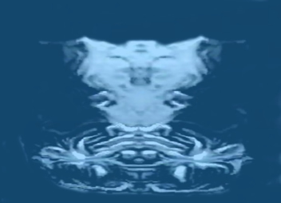

Created in the Ancient's Image Theory
|
The ongoing question we’ve all had within our
minds while playing the Panzer Dragoon series was: just who were these
"Ancients" and what exactly did they look like? Were they
human? Could they have been alien, but humanoid in appearance? Maybe
they were made of pure energy? Who knows, but the answer may very well
be hidden within Panzer Dragoon Saga. Throughout Panzer Dragoon Saga, there is a point in the game when you get to witness the resurrection of an ancient battleship called Shellcoof. Its resurrection occurs at a place called Georgius. For those who have no idea what I’m talking about, Shellcoof was a ship that existed long ago, built by the Ancients to do their dirty work. It played a major role in Panzer Dragoon 2 Zwei, as well. I won’t spoil anything, if you haven’t played that game. So, what I’m trying to get at here, is when Shellcoof’s resurrection is complete, look at the back of the ship. Do you see anything strange or even surprising? Well, I see a face, body, and two arms, with six fingers at the end of each arm! My theory is that Shellcoof was built in the Ancient’s image, a symbol of their greatness. It could be my mind just doing what all minds normally do, and that is making a face out of abstract imagery, but it’s too obvious to be just that, and shouldn’t be overlooked. There is clearly a face on the back of that ship, and it looks more humanoid rather than human, in my opinion. If you look at the face, its appearance is quite animal-like. It even seems as if it has two sets of ears. The first set, depending on how you look at it, could even be a set of antenna, that it uses for sensory purposes. On the other hand, they could in fact, just be long protruding ears. You decide! The second set of ears look more human-like, in that they are more round in shape. Looking at its eyes, you can see that they are very thin. Having to squint all the time, maybe would suggest that the Ancients must have had eye sight problems! Below the eyes, we can assume it most likely has two sets of nostrils, the second set being larger than the first. The head also seems to have bushy fur coming off from the left and right sides, as well. This contributes to its more animal-like appearance. From the head, we move down to the neck. The neck seems very wide, with small appendages sticking out of it. This may be an insect-like trait, but who knows. Moving further down gives us a look at its chest area.
Don’t laugh, but it looks like it has tiny pecks, and a set of
abs! Also, we see two sets of arms, with six sets of fingers at the
end of each hand. The Ancients would have had to use their fingers constantly
to create such fascinating technology, I’d guess. It doesn’t
have much of a lower half. The very bottom could very well be, slithering
tentacle-like appendages, that it uses to move. It’s just a crazy
assumption. Well, that sums it’s body structure up. I’d also like to add that the Ancients could have had a pure energy form, rather than a solid form. I say this because, all of their ancient bio-engineered creations use and have massive amounts of energy. The Ancient Age monsters throughout the Panzer Dragoon world, can constantly fire massive arrays of insanely powerful lasers. It takes great amounts of energy to do this, and it’s just a theory, but maybe the Ancients instilled a bit of themselves into each and every monster they engineered. Also, when you destroy Shellcoof’s engine rudders in Panzer Dragoon Saga, energy streams grab your dragon and send it to the back of the ship, where the face is located. These energy beams will try to stop you from bringing forth the ships destruction, flinging your dragon back and forth violently. Are these beams the Ancients themselves in the form of energy, trying to stop you from destroying the ship? It’s a possibility. Just look at the dragon, it can take solid objects,
convert them into pure energy and store them within its body (see my
Turning Solid Objects Into Pure Energy Theory)! In conclusion, your mind may very well be taking an
abstract image and bringing that image together so it makes sense, a
face. This may be so, but take it with a grain of salt. We’ve
always wanted to know what the Ancients looked like, and with the bleak
possibility of another Panzer Dragoon RPG, we may never get that chance.
You’ve got to admit though, if this image is in fact that of an
Ancient, the Ancients were one crazy looking race! |
|
When Shellcoof is resurrected, move to the back of the ship. |
|
You can clearly see a a face, body, and two arms, with six fingers at the end of each arm! |
|
If that face is truly that of an Ancient,
here is what the Ancients might have looked |
|
 The Ancients might have had a pure energy form rather than a solid one. |
| When Shellcoof attacks you, could it be the Ancients in their pure energy form trying to stop you from destroying the ship? |